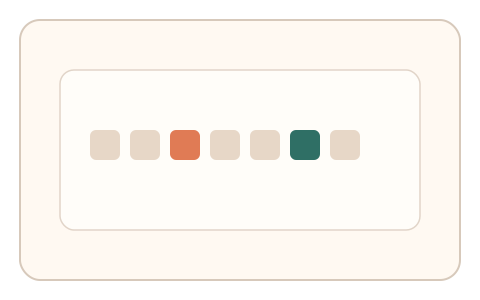
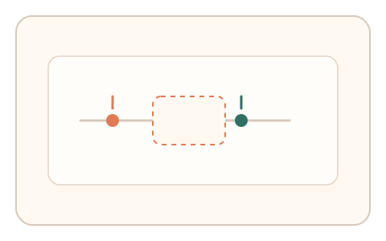
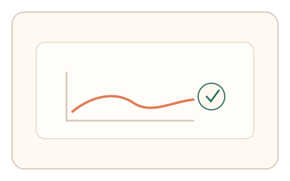

#101
Morphological Analysis - Combination Batches
已扩展
眨眼漏检序列
在 RSVP 序列中识别两个目标，比较 200–500ms 区间的漏检曲线与首目标反应时。
概念原文
RSVP 中要求识别两个目标，系统记录第二目标在 200–500ms 区间的漏检曲线并与首目标反应时作任务内比较。任务结构为短序列，信号形态为反应时/节律序列。
利用注意力眨眼曲线作为人类特征。
研究背景
注意力眨眼导致第二目标在特定时间窗内更易漏检，漏检曲线与首目标反应时存在稳定关系。该时域特征难以被脚本自然复现。
核心机制
- 快速串行呈现字符或图形序列（RSVP）。
- 用户识别两个目标项。
- 记录第二目标在 200–500ms 的漏检率。
- 与首目标反应时进行任务内比较。
用户流程
- 步骤 1：用户观看 RSVP 序列。
- 步骤 2：用户报告两个目标项。
- 步骤 3：系统计算漏检曲线并判定。
判定信号
漏检曲线形态
注意力眨眼形成稳定的时间窗漏检。
首目标反应时
首目标负荷与漏检程度存在关联。
判定逻辑
漏检曲线与反应时需符合人类分布区间；过度稳定或无眨眼效应判异常。
对抗面
- 脚本直接识别全部目标并零漏检
- 模拟固定漏检率曲线
防御与缓解
- 随机化序列内容与目标间隔
- 加入轻微噪声降低直接识别
- 叠加反应时与选择路径信号
可达性与风险
提供更慢序列与更大目标，必要时提供替代任务。
- 序列过快导致真实用户漏检过多
- 视觉障碍用户可能无法完成
可视化状态

状态 1：RSVP 序列
快速串行呈现目标序列。

状态 2：时间窗漏检
关注 200–500ms 的漏检区间。

状态 3：曲线判定
对比漏检曲线与反应时。
参考资料
Attentional blink
说明注意力眨眼效应与时间窗漏检。
Rapid serial visual presentation
说明 RSVP 任务结构与特性。